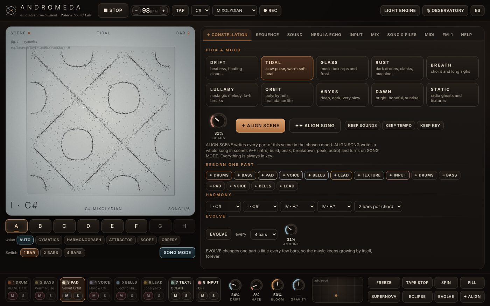
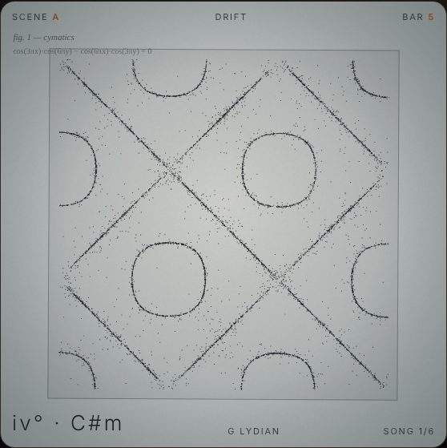
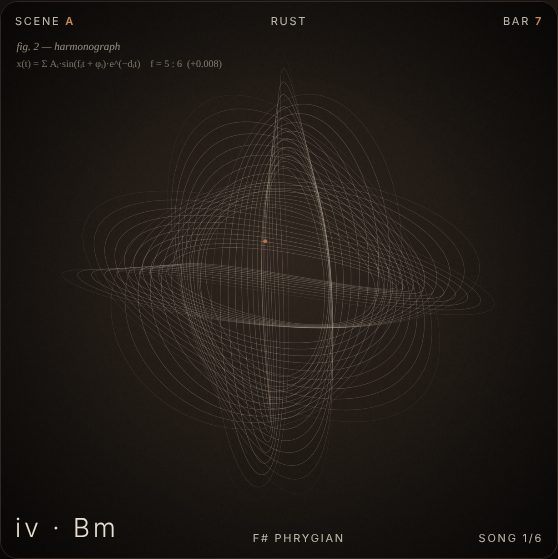
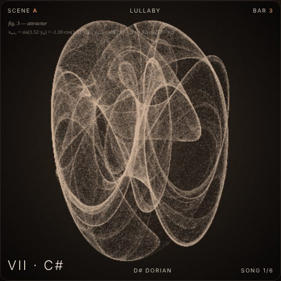
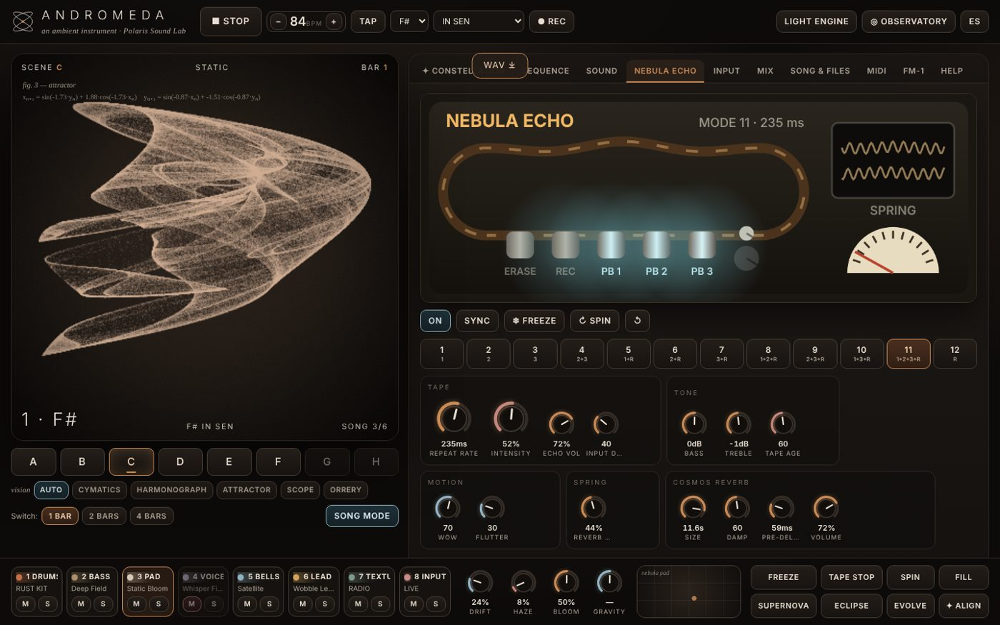
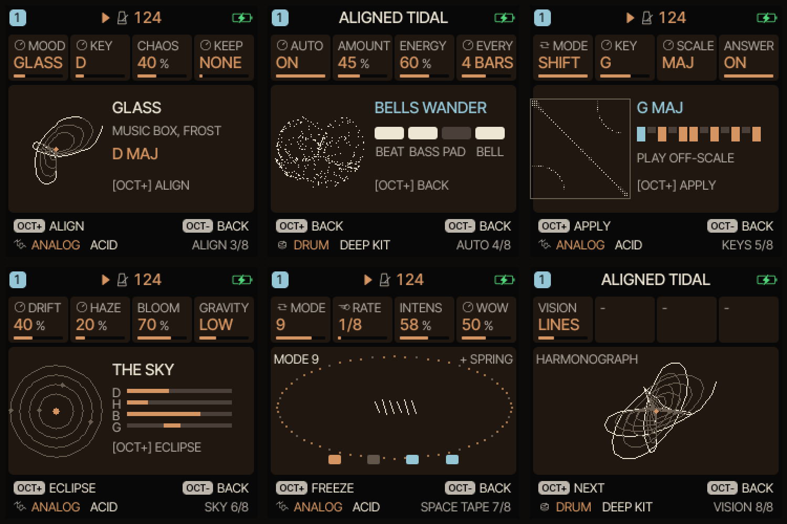

an ambient instrument
Dark Funk Durcal design · Polaris Sound Lab · Mérida, Yucatán

What it does
ANDROMEDA writes warm, floating, nostalgic ambient music: pads that breathe like old tape, choirs, music boxes, bells, soft drum machines, dust and wind. You don’t need music theory: every note is always in key, and the music keeps writing itself from what you give it.
Pick DRIFT, GLASS, ABYSS… and ALIGN writes a whole piece: beat, bass, pad and bells, in key and in time.
Variations of your own pattern every few bars, parts entering and leaving. BACK returns to yours.
Any keyboard: a note outside the scale gently shifts the music to a new key on the next beat.
A three-head tape echo with spring reverb, 16 effects, and mathematical art that moves with the sound.
Quick guide
Works the same in the browser, the Mac app and the plug-in. The program is in English; the EN · ES button (top right) switches it to Spanish.
Browsers only allow sound after a click. Use Chrome on a computer for the best result.
In the ✦ PLAY tab pick DRIFT, TIDAL, GLASS… then ALIGN SONG. A whole piece appears, in key.
▶ PLAY (or the space bar) starts it. ✦ AUTO keeps it changing by itself, slowly, forever.
Turn the four macros at the bottom: DRIFT (tape wobble), HAZE (dust and blur), BLOOM (space), GRAVITY (dark or bright). Try SPACE TAPE and the FX pad.
Play on a MIDI keyboard or the computer keys Z–M. ● REC records a WAV; SONG & FILES saves your piece (.andromeda) and exports MIDI.




Get it — free
Open Terminal (Applications › Utilities), paste this line and press Return. It installs the app, the VST3 and the AU, and unblocks them for macOS:
Or download the zip and right-click “Install ANDROMEDA.command” › Open.
Arturia KeyLab Essential 49 map: guide.
Hardware
A free firmware that adds six ANDROMEDA pages to the FM-1 (ALIGN, AUTO, KEYS, SKY, SPACE TAPE, VISION) and keeps everything it could do before. Installs from a web page in about five minutes, and the official firmware can always go back.
FM-1 charged, USB-C data cable, Chrome or Edge on a computer.
Open the installer, allow MIDI, press Install. Don’t unplug while it writes.
Go to ALIGN, choose a mood with K1, press OCT+, then PLAY. VISION › K4 (LANG) puts the screen in Spanish.

Manuals (PDF)
Written for someone who has never used music software: installing, the first song, every button, recipes and help. English and Spanish.
Free and open source
ANDROMEDA costs nothing. The full source is on GitHub: the instrument and plug-in under AGPL-3.0 (drophlex/ANDROMEDA), the FM-1 firmware under GPL-3.0 (drophlex/ANDROMEDAFM1). If it brings you good moments, a small donation helps keep it growing.
♥ Donate with PayPal